Supplement B. Methods and results, chart by chart
Every chart is drawn from a baked data file by charts.mjs; the files are made by the scripts named in the paper's methods. The ropes themselves are drawn in the rope figures.
B1. Tensile model
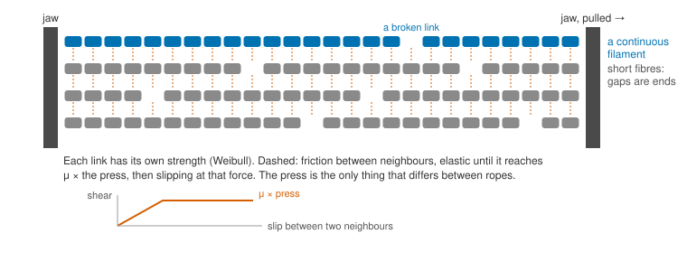
Method. A rope is 96 sections long. Each fibre's place is a track of unit links, one continuous filament or short fibres 40 links long laid end to end at a random phase. Every link has the same stiffness and its own strength, drawn from a Weibull distribution of modulus 5. Neighbouring tracks are joined at every section by a frictional interface: elastic (stiffness 0.25 of a link's) until its shear reaches μ = 0.3 times the press between the two, then slipping at that force. Both ends are held in jaws. The rope is stretched in 110 equal steps to 4.5%. At each step the equilibrium is the minimum of a convex energy, found by Newton's method with a banded Cholesky solve and a line search; then any link over its strength is broken, worst first, and the equilibrium found again. A solve is accepted only if its last step is under a tolerance of 10⁻⁹ of the stretch; runs that fail this are reported and left out.
Result. The model: what is varied between ropes is who touches whom (the cross-section's packing) and the law for the press. Strength is the peak force at the jaws, in units of one continuous strand's mean strength at the same length, divided by the rope's weight in strands with every sheath, hose and extra strand length counted.
B0a. Strength per weight over fibre scatter and friction

Method. Thirteen filaments, 96 sections. The hose is a material with flaws (paper, section 2.3): each section has an axial and a hoop strength, a section over-stressed in hoop splits and stops pressing, and the thickness and tightness are chosen in every cell on seeds 1 to 30 by the 5th percentile and reported on seeds 31 to 90. Each fibre scatter has its own reference strand. 1440 reported pulls were re-pulled and reproduced, all converged.
Result. The hose rope is above the loose bundle everywhere, by a margin that shrinks as the fibre becomes uniform. It is above a single strand only for scattered fibre. Hoops fall below the loose bundle once the fibre is uniform.
B0b. The hose model's assumptions, one at a time
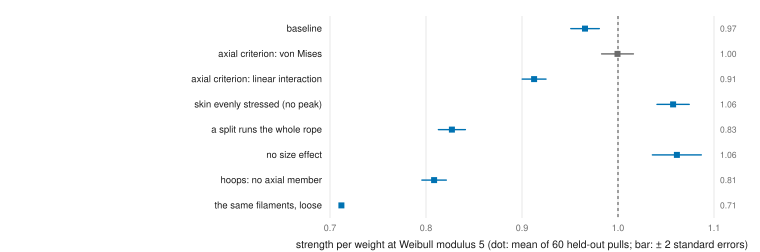
Method. At Weibull modulus 5 and friction 0.3, each assumption of the hose model changed in turn, with thickness and tightness re-optimised each time and reported on held-out seeds.
Result. The hose stays above the loose bundle under every version. Whether it reaches a strand depends on the version. A split that runs the whole rope is the damaging case: the best hose is then barely tight (hoop stress 0.05 of strength). At modulus 10 the same table runs from 0.80 to 0.94, against 0.81 loose.
B0c. Bundle size, in four dimensions and in three
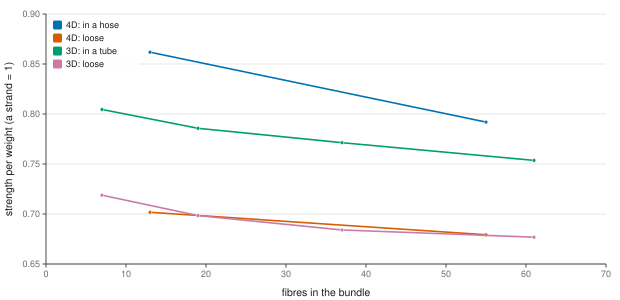
Method. Cuboctahedral clusters of 13 and 55 fibres (twelve neighbours each) in a hose, and hexagonal bundles of 7 to 61 (six neighbours) in a load-bearing tube. The same flawed-material skin; thickness and tightness tuned at each size on seeds 1 to 15 and reported on seeds 16 to 55; 48 sections, Weibull modulus 5, friction 0.3.
Result. Strength per weight falls slightly with size in both worlds; the spread falls faster (see the paper's table). The gap between hose and loose is wider in four dimensions.
B2. Force against stretch, one pull
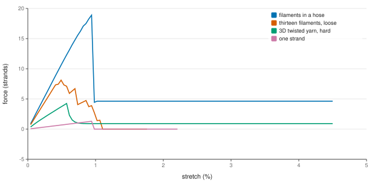
Method. Sample 1 of four ropes, force at the jaw against stretch.
Result. A strand fails at its weakest link. A loose bundle fails in a cascade as each break hands its load on. In a hose, a broken filament is gripped and carries load again a little way along, so the rope climbs higher and holds a plateau after it peaks.
B3. Strength per weight, all ropes, in the first (uncoupled) model

Method. Each rope pulled 200 times with different random strengths and fibre phases. The dot is the mean, the bar the 5th to 95th percentile. The line at 1 is a single continuous strand's mean.
Result. At this setting (96 sections, Weibull modulus 5) filaments in a hose read above a strand; B14 shows how that depends on the rope's length. The 4D twisted yarn is given no grip (paper, section 3.1). Braids and hoops sit with the loose bundle.
B4. Strength per weight against sheath thickness
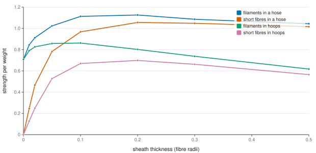
Method. Thirteen fibres in a sheath of each thickness, 60 pulls a point. A hose τ thick weighs 27τ fibres' worth and presses each outer fibre with 0.06 × HOOP × τ (HOOP = 0.5: the skin's mean stress as a share of its strength); fibre to fibre a third of that. A hose also carries load along the rope; hoops do not.
Result. There is a best thickness, a tenth to a fifth of a fibre's radius. Past it the weight outruns the grip. Hoops never reach 1.
B5. Sensitivity to the chosen parameters

Method. Chosen, not measured: HOOP, the laying tension of a yarn or braid (5% of a link's strength), and friction (0.3). Each rope was re-pulled with each number halved and doubled (60 pulls a tuning), re-tuned to its best thickness or angle each time.
Result. For the hose and hoops, friction and hose stress enter only as a product, so they are one dial, and the laying tension does not touch them. The order holds along that dial. Yarn on a ribbon moves so much that it can be ordered but not quoted.
B6. Braids of strands: strength per weight against strand angle

Method. A strand laid at angle θ is a track of stiffness cos³θ and strength cosθ, weighing 1/cosθ, pressing tan²θ × its tension on its neighbours. 200 pulls a point; 0° is the same strands loose. The bench does not know a tube from a thread.
Result. Braiding barely moves strength per weight and then loses it: the angle that grips is the angle that costs.
B7. Cabling

Method. Thirteen ropes in a sheath, then thirteen of those: the same bench with the level below as its fibre, given that level's measured strength distribution, stiffness and weight. 40 pulls a point.
Result. Each level is worth less per weight than the one below, and a thicker jacket only makes it worse.
B8. Contracting hose
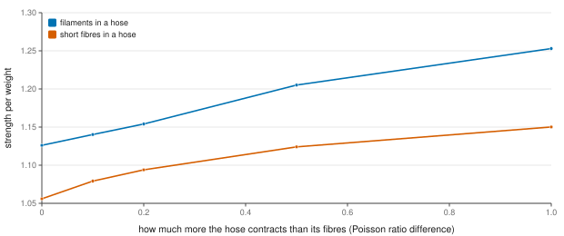
Method. The hose's press multiplied by 1 + (Δν / 0.005) × stretch, where Δν is how much larger its Poisson ratio is than its fibres' and 0.005 its misfit. 60 pulls a tuning, best thickness.
Result. A difference materials could supply (about 0.2) adds little. A sheath built to contract adds a tenth.
B9. Twist retention during relaxation, 3D and 4D
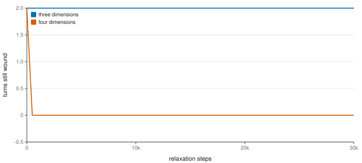
Method. Seven fibres, one in the middle and six round it, each a chain of 33 beads joined by springs (stiffness 3000), with a repelling contact (stiffness 6000) between beads of different fibres closer than two radii. The top end is turned two full turns in the x–y plane, both ends are clamped, the yarn is stretched 3%, every free bead is jiggled by 0.002, and the whole is relaxed by damped dynamics for 30000 steps. The same code runs with three coordinates and with four; the only difference is that a bead has one more direction to move in. "Turns still wound" follows one outer fibre round the core.
Result. In three dimensions both turns stay. In four they leave within the first few thousand steps, and the yarn ends at the untwisted energy (4.72 against 4.72). With no jiggle the 4D twist stands (2 turns): it is an equilibrium, and an unstable one.
B10. Turns kept against turns given

Method. The same experiment for 0 to 3 turns, read at rest.
Result. Ours keeps what it is given. The 4D yarn keeps nothing of a whole turn and all of a half turn: a half turn cannot be undone with the ends clamped, in either world.
B11. Ribbon core: twist kept against ribbon width

Method. The 4D yarn again, two turns, with the middle fibre replaced by a rigid ribbon of the given half-width across the spare direction.
Result. Below a threshold between 0.1 and 0.2 (one to two fibre radii) the fibres slip round the ribbon's edge and the twist is lost. Above it both turns stay.
B12. Thirteen fibres between a core and a wall: rest energy against whole turns
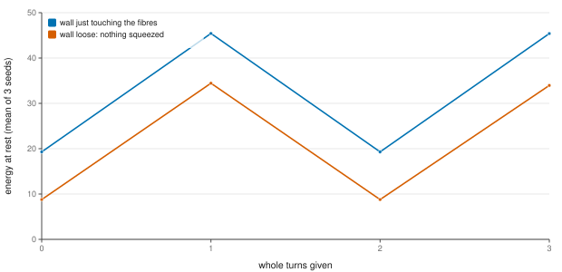
Method. The full 4D bundle (one fibre and the twelve that fit round it) inside a wall no bead's centre may pass, at 0.20, where the fibres just touch, and at 0.215, where nothing is compressed. 0 to 3 turns, three seeds, 40 000 steps. With no wall the same thirteen shed every turn.
Result. Even twists rest at the untwisted energy and odd twists at one higher value, the same for every seed (the three seeds differ by under 0.2). One turn is kept and two are shed.
B13. Quarter turns: confined bundle against free fibres
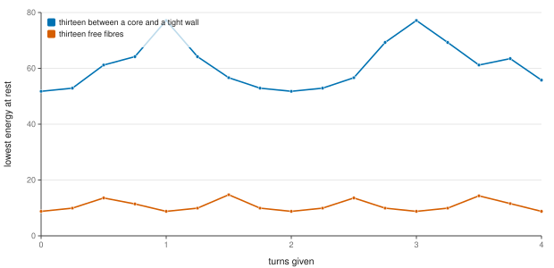
Method. The same bundle with a tight wall (0.19) given 0 to 4 turns in quarter turns about a fourfold axis of the packing, annealed (six kicks of falling size, each followed by a relaxation), three seeds; the lowest rest energy at each twist. And thirteen free fibres, one seed.
Result. The confined bundle repeats every two turns and mirrors about one. The free fibres repeat every turn. At this tightness some runs jam above the lowest state, which is why the minimum over seeds is plotted.
B14. Rope length
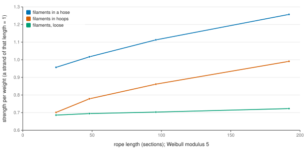
Method. Thirteen filaments loose, in hoops and in a hose (the better of two thicknesses), at four rope lengths, 40 pulls a point; each length has its own reference strand, which is 1. At Weibull moduli 10 and 20 (96 sections) the hose reads 0.97 and 0.95, and the loose bundle 0.80 and 0.88.
Result. A strand is a weakest-link chain, so the longer the rope the weaker the strand it is compared with, while the loose bundle hardly moves and the hose rope gains. The hose is above the loose bundle at every length. It is above a single strand only for the longer ropes.
B15. Inward force of a wound fibre: law against simulation
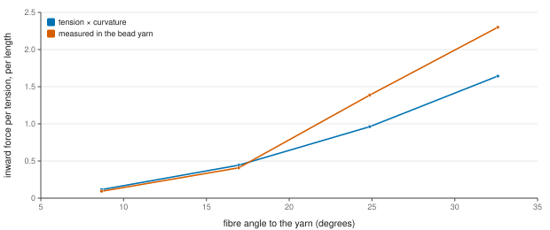
Method. For the 3D bead yarn at four twists, the inward force on an outer fibre per unit tension, read from its contacts, against tension × curvature for a helix of the measured radius and angle.
Result. Within 19% below 20°; above it the bead yarn presses about 1.4 times the law.
B16. Load sharing between contacts

Method. Thirteen balls with one-sided linear contacts, each outer ball pushed inward by 1; diameters drawn at random, 200 packings a row. The line is one third.
Result. With equal fibres every contact carries a third. As the fibres become unequal the mean stays near a third and the spread grows until a contact is as likely to carry nothing as two thirds.